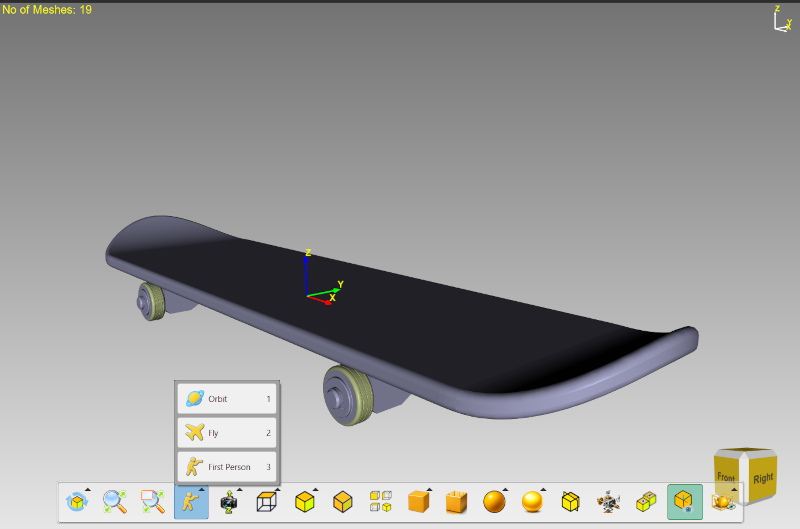

Lesson 6 of 14
Lesson 6: Camera Modes
Introduction
Camera modes change how you navigate through 3D space. ModelViewer offers three distinct camera modes, each designed for different purposes.
Switching Camera Modes
Step 1: Using Keyboard
Press 1 for Orbit, 2 for Fly, or 3 for First Person mode.
Step 2: Using Toolbar
Click the 'Camera Modes' button in the view toolbar and select from the menu.

Camera modes dropdown menu showing Orbit, Fly, and First Person options
The toolbar button updates its icon to show which camera mode is currently active.
Orbit Mode (Key: 1)
Best for: Examining objects, CAD work, general model inspection.
Mouse Controls
• Middle Mouse Drag: Rotate around the model
• Right Mouse Drag: Pan the view
• Mouse Wheel: Zoom in/out
• Right Mouse Drag: Pan the view
• Mouse Wheel: Zoom in/out
Keyboard Controls
• W/S: Pan up/down
• A/D: Pan left/right
• X/Z: Zoom in/out
• I/K: Rotate pitch (up/down)
• J/L: Rotate yaw (left/right)
• M/N: Rotate roll
• A/D: Pan left/right
• X/Z: Zoom in/out
• I/K: Rotate pitch (up/down)
• J/L: Rotate yaw (left/right)
• M/N: Rotate roll
Fly Mode (Key: 2)
Best for: Exploring large scenes, architectural walkthroughs, terrain navigation.
Keyboard Controls
• W/S: Move forward/backward
• A/D: Strafe left/right
• Q/E: Move down/up (altitude)
• A/D: Strafe left/right
• Q/E: Move down/up (altitude)
First Person Mode (Key: 3)
Best for: Ground-level navigation, walking simulations, architectural interiors.
Keyboard Controls
• W/S: Move forward/backward
• A/D: Strafe left/right
• Q/E: Move down/up (altitude)
• A/D: Strafe left/right
• Q/E: Move down/up (altitude)
Comparison Chart
| Feature | Orbit | Fly | First Person |
|---|---|---|---|
| Best For | Object inspection | Scene exploration | Ground navigation |
| Model Centered | Yes | No | No |
| Vertical Movement | Pan only | Q/E keys | None |
| Pitch Limit | No limit | ±89° | ±60° |